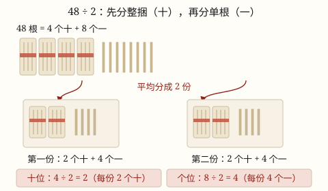

除数是一位数与除数是两位数的除法
除数是一位数的除法从高位除起：先分几个十，再分几个一，每一位分别平均分，再把各次分到的按数位写下来。
| 所属主题 | 数的运算 |
|---|---|
| 所属模块 | 数与代数 |
| 课标学段 | 第二学段（3~4年级） |
| 前置知识 | 除法的初步认识与用口诀求商、除法的初步认识与用口诀求商 |
| 核心素养 | 运算能力推理意识数感 |
教材定位
人民教育出版社《2024年版》
对应三下第 2 单元「除数是一位数的除法」：口算与笔算、商的变化规律。；对应四下第 1 单元「除数是两位数的除法」：试商与调商。
课标要求
| 数与代数·数与运算 | 在具体情境中，认识万以上的数，了解十进制计数法；探索并掌握多位数的乘除法，感悟从未知到已知的转化（例8）。 印刷第 20 页 行为动词：掌握 |
|---|---|
| 数与代数·数与运算 | 在解决简单实际问题的过程中，理解四则运算的意义，能进行整数四则混合运算。 印刷第 21 页 行为动词：理解 |
| 数与代数·数量关系 | 在实际情境中，运用数和数的运算解决问题；在解决实际问题的过程中，能结合具体情境，选择合适的单位进行简单估算，体会估算在生活中的作用（例11）。 印刷第 21 页 行为动词：运用 |
说明
48 ÷ 2 不是背一句口诀，而是真的把 48 根小棒平均分成 2 份。小棒是 4 捆（每捆 10 根）加 8 根零散的：先分整捆——4 捆分成 2 份，每份 2 捆，也就是 2 个十；再分零散的——8 根分成 2 份，每份 4 根，也就是 4 个一。合起来每份是 2 个十和 4 个一，就是 24。
这就是除数是一位数的除法的核心：从高位除起，每一位分别平均分。除到哪一位，就把这一位分得的结果（商）写在哪一位的上面——分的是 4 个十，得到的 2 表示 2 个十，就得写在十位上。
如果某一位分完还有剩，就把剩下的和低位合起来继续分。比如 52 ÷ 2：5 个十平均分成 2 份，每份 2 个十，还剩 1 个十；把剩下的 1 个十拆成 10 个一，和原来的 2 个一合成 12 个一，再分成 2 份，每份 6 个一。结果是 26。
分到最后还剩一点、不够再分一份时，剩下的叫余数。余数一定要比除数小——如果余数比除数大或者和除数一样大，说明还能再分出一份，说明商算小了。
（除数是两位数的除法）
除数是两位数时，我们不能再用乘法口诀直接求商，要用试商：把除数看作和它接近的整十数，先估一估商是几。比如 245 ÷ 34，把 34 看作 30，先试商 8。
试出来的商不一定刚好合适，要调商：用试出的商去乘原来的除数，如果积比被除数大了，说明商大了，要调小；如果余数比除数大，说明商小了，要调大。上例中 8 × 34 = 272，比 245 大，把商调成 7：7 × 34 = 238，245 - 238 = 7，余数 7 比 34 小，正好。
算完检查一条铁规则：余数必须比除数小。余数比除数大，说明还能再分一份，商肯定小了。最后用「商 × 除数 + 余数 = 被除数」验算一遍。
使用场景
分体育器材：体育老师把 48 根跳绳平均分给 2 个班，先按整捆的思路分，每班 24 根。
班级分图书：图书角新到 96 本课外书，平均放到 3 个书架上，每个书架放几本。
算单价：3 盒同样的彩笔一共 36 元，一盒多少钱——就是把 36 平均分成 3 份。
裁剪材料：手工课上把 68 分米长的彩带平均剪成 4 段，每段几分米。
分东西还剩一点：65 颗糖果平均分给 4 个小朋友，每人几颗、还剩几颗，剩下的必须比 4 少。
（除数是两位数的除法）
快递分拣：几百个包裹要装进每袋 24 个的转运袋，装满几袋、剩几个，用 312 ÷ 24 这样的除法算。
春游分组：全年级 160 人按每 32 人一车安排大巴，160 ÷ 32 = 5 辆，正好坐满。
购物预算：一个书包 68 元，300 元最多能买几个，算 300 ÷ 68，结果是 4 个还余 28 元——剩下的钱不够再买一个。
农业收成：果园摘了 980 千克苹果，每箱装 45 千克，算 980 ÷ 45 知道能装满几箱、还剩多少千克装不满。
注意点
从最高位除起，别从个位开始。先分几个十，再分几个一；从个位开始分，整捆的剩下时没法和低位合并。
商要和被除数的数位对齐。除到十位，商就写在十位上；除到个位，商就写在个位上。位置写错，这个数字表示的意思就全变了。
余数必须比除数小。余数比除数大（或一样大），说明桌上的东西还能每人再分一份，商要调大。
哪一位不够商 1，就商 0 占位。比如 618 ÷ 6 的十位上 1 比 6 小，十位也要写 0，不能跳过去不写。
算完用乘法检查：\text商 × \text除数 + \text余数 = \text被除数，正好分完时就是 \text商 × \text除数 = \text被除数。
看清题目问的是「每份几个」还是「能分几份」。48 ÷ 2 和 48 ÷ 24 是两道不同的题，除数放错，答案的意思就变了。
（除数是两位数的除法）
试商用整十数，验商用原除数。把 34 看作 30 只是帮你估商，判断商合不合适时，必须用 8 × 34 而不是 8 × 30。
商大了调小，商小了调大。四舍（如把 42 看作 40）容易把商试大，五入（如把 38 看作 40）容易把商试小，记住这个倾向，调一次就够。
余数必须比除数小。写完商先看余数：余数 ≥ 除数就说明商小了，要往大调。
商中间或末尾不够商 1 要商 0 占位。哪一位上不够商 1，就在那一位上写 0，位值不能空着。
为什么是这样

图 1：48 ÷ 2 的分小棒过程——整捆先分，散根后分，每份 24
算理推导
回到除法的本义：除法就是「平均分」。48 ÷ 2 问的是——把 48 平均分成 2 份，每份是多少。
48 不是 48 个孤立的东西，它是 4 个十和 8 个一。分东西当然先分大件：4 捆分成 2 份，每份 2 捆；8 根散的分成 2 份，每份 4 根。每份就是 2 个十加 4 个一，等于 24。
为什么不能先分零散的？因为整捆分到最后可能剩下一整捆（比如 5 捆分给 2 人，剩 1 捆），剩下的那捆必须拆开变成 10 根，才能和零散的合起来接着分。先分高位，剩下的正好往低位带；先分低位，剩下的整捆就无处可去了——这就是「从高位除起」的道理。
再看 52 ÷ 2：5 个十分成 2 份，每份 2 个十，剩 1 个十。这 1 个十拆成 10 个一，加上原来的 2 个一，一共 12 个一，分成 2 份每份 6 个一。所以商是 2 个十加 6 个一，也就是 26。
把每一步分到的结果按数位记下来，就是竖式：十位分到 2 记在十位，个位分到 6 记在个位。竖式不是新规矩，它只是把「分小棒」的过程写成了数字。
最后说说余数为什么必须比除数小：余数是「剩下的、不够再分一份」的东西。分给 4 个人还剩 5 颗糖——那 5 颗明明还能每人再分 1 颗，说明你根本没分完，商算小了。所以余数一旦不小于除数，就得把商调大再分一次。
（除数是两位数的除法）
试商为什么可行：除数 34 在 30 和 40 之间，用 30 估出来的商虽然不一定准，但一定「八九不离十」，最多上下调 1，比一个一个猜快得多。这就是把不会的（两位数除法）变成会的（整十数除法）。
调商的方向看两个信号：信号一，\text商 × \text除数 > \text被除数，说明每份分多了，商要调小，如 8 × 34 = 272 > 245，改商 7；信号二，余数比除数大，说明还能再分一份，商要调大。两个信号都在告诉你「分东西没分平」。
余数必须比除数小的道理：245 = 7 × 34 + 7，如果余下的是 41，那 41 里还能再拿出一个 34，商至少该是 8。所以余数一旦不比除数小，商一定是错的。验算式 \text商 × \text除数 + \text余数 = \text被除数（余数 < 除数）把整道题锁死。
动手实验
找 4 捆小棒（每捆 10 根）和 8 根散的，两人一起分 48 ÷ 2：先一人一捆地分整捆，再一人一根地分散的，数一数每人拿到 2 捆 4 根，就是 24。再试 52 ÷ 2：5 捆分给 2 人各 2 捆后还剩 1 捆，把这捆的皮筋解开，10 根和原来的 2 根混在一起继续分，每人再拿到 6 根，结果 26。亲手解开一次皮筋，你就明白竖式里为什么要把「余下的数和下一位合起来」。最后再试 65 根分给 4 人，看看剩下几根才算分完。 （除数是两位数的除法） 自己出 5 道除数是两位数的题，先在纸上写「我把 __ 看作 __，试商 __」，再列竖式算，最后把每道题的调商过程记下来：哪几题一次试对？哪几题调大了还是调小了？四舍的题是不是常把商试大、五入的题常把商试小？把规律找出来，你就是「试商小侦探」。
按场景的例题
例 1（场景：购物消费） 体育课分跳绳
体育器材室有 48 根跳绳，平均分给 2 个班，每班分到几根？
解：48 是 4 个十和 8 个一。先分十位：4 个十平均分成 2 份，每份 2 个十，商的十位写 2；再分个位：8 个一平均分成 2 份，每份 4 个一，商的个位写 4。48 ÷ 2 = 24。验算：24 × 2 = 48。
答：每班 24 根。
例 2（场景：工程建造） 文具店买彩笔
3 盒同样的彩笔一共 36 元，一盒多少元？
解：把 36 平均分成 3 份。先分十位：3 个十 ÷ 3 = 1 个十，十位商 1；再分个位：6 个一 ÷ 3 = 2 个一，个位商 2。36 ÷ 3 = 12。验算：12 × 3 = 36。
答：一盒 12 元。
例 3（场景：上学日常） 图书角给书上架
图书角新到 96 本课外书，平均放到 3 个书架上，每个书架放几本？
解：先分十位：9 个十 ÷ 3 = 3 个十，十位商 3；再分个位：6 个一 ÷ 3 = 2 个一，个位商 2。96 ÷ 3 = 32。验算：32 × 3 = 96。
答：每个书架放 32 本。
例 4（场景：计量与估算） 手工课剪彩带
一条 68 分米长的彩带，平均剪成 4 段，每段长几分米？
解：先分十位：6 个十 ÷ 4 = 1 个十，余 2 个十，十位商 1；把余下的 2 个十拆成 20 个一，加上原来的 8 个一，一共 28 个一；28 个一 ÷ 4 = 7 个一，个位商 7。68 ÷ 4 = 17。验算：17 × 4 = 68。
答：每段长 17 分米。
例 5（场景：饮食与配比） 分糖果还剩几颗
65 颗糖果平均分给 4 个小朋友，每人分到几颗？还剩几颗？
解：先分十位：6 个十 ÷ 4 = 1 个十，余 2 个十，十位商 1；余下的 2 个十拆成 20 个一，加原来的 5 个一，一共 25 个一；25 个一 ÷ 4 = 6 个一，余 1 个一，个位商 6。65 ÷ 4 = 16 \dots\dots 1。余数 1 比除数 4 小，说明分完了。验算：16 × 4 + 1 = 65。
答：每人 16 颗，还剩 1 颗。
例 6（场景：物流运输） 快递分拣站的转运袋
分拣站今天有 312 个包裹，每个转运袋装 24 个，装满几袋后还剩几个包裹？
解：把 24 看作 20 试商：312 ÷ 24，先试商 1（31 个十里最多分到 1 个 24），十位商 1 余 7；个位 72 ÷ 24 试商 3，3 × 24 = 72，正好分完。验算：13 × 24 = 312。
答：装满 13 袋，不剩包裹。
例 7（场景：行程出行） 春游租车
四年级 160 人春游，一辆大巴坐 32 人，需要几辆大巴才能一次运完？
解：把 32 看作 30 试商 5：5 × 32 = 160，正好等于被除数，商 5 合适，没有余数。
答：需要 5 辆大巴。
例 8（场景：校园生活） 带 300 元买书包
一个书包 68 元，300 元最多能买几个书包？还剩多少钱？
解：把 68 看作 70 试商 4：4 × 68 = 272，300 - 272 = 28，余数 28 比 68 小，商 4 合适。剩的 28 元不够再买一个。
答：最多买 4 个书包，剩 28 元。
例 9（场景：农业生产） 苹果园装箱
果园摘了 980 千克苹果，每箱装 45 千克，能装满几箱？还剩多少千克？
解：45 接近 50，试商时看作 50（五入），商容易试小：980 ÷ 45 先看前两位 98，98 ÷ 45 试商 2，十位商 2 余 8；把个位 0 落下来成 80，80 ÷ 45 商 1 余 35。合起来商 21，验算 21 × 45 + 35 = 945 + 35 = 980，余数 35 < 45。
答：装满 21 箱，还剩 35 千克装不满一箱。
常用推论
\text被除数 ÷ \text除数 = \text商 \dots\dots \text余数；反过来 \text商 × \text除数 + \text余数 = \text被除数（余数 < 除数），这就是验算的办法。
正好分完时余数是 0，验算简化成 \text商 × \text除数 = \text被除数。
从高位除起：先看被除数的最高位，最高位比除数小就看前两位；除到哪一位，商就写在哪一位上面。
每除完一位，就把这一位余下的数和下一位合起来继续除；哪一位不够商 1，就在那一位商 0 占位。
余数必须比除数小；余数等于或大于除数，说明商还可以调大。
被除数 ÷ 除数 = 商；验算用 \text商 × \text除数 = \text被除数（除数不为 0）。
验算有余数的除法：\text商 × \text除数 + \text余数 = \text被除数，且余数必须小于除数。
商不变的规律：被除数和除数同时乘或除以相同的数（0 除外），商不变。口算 1200 ÷ 25 可以变成 4800 ÷ 100 = 48。
除法的性质：a ÷ b ÷ c = a ÷ (b × c)（b、c 均不为 0），连除可以合成除以两个除数的积。
易错点
错48 ÷ 2，先算十位分得 2、后算个位分得 4，却把先算的 2 写在个位、后算的 4 写在十位，商写成 42。
为什么错商要一位一位从高位往下写。第一次分的是 4 个十，得到的 2 表示「2 个十」，必须写在十位上；写到了个位，它就变成 2 个一了。
正确先分十位，商的第一位写十位；再分个位，商的第二位写个位，得 48 ÷ 2 = 24。用乘法一验算就露馅：42 × 2 = 84，不是 48。
错65 ÷ 4 算成「商 15 余 5」。
为什么错余数 5 比除数 4 大，剩下的 5 颗糖果还能给 4 个小朋友每人再分 1 颗，说明根本没有分完。
正确65 ÷ 4 = 16 \dots\dots 1，余数 1 < 4，这才分完。
错54 ÷ 3，十位上 5 除以 3 商 1 余 2，把余下的 2 直接抄到商的个位，得 12。
为什么错十位余下的 2 是 2 个十，不是 2 个一。它要拆成 20 个一，和个位的 4 个一合成 24 个一，再分成 3 份。
正确24 个一分成 3 份，每份 8 个一，所以 54 ÷ 3 = 18。
错618 ÷ 6，十位上的 1 比 6 小就直接跳过去不写，算成 13。
为什么错哪一位不够商 1 也要写出来，商 0 占位；跳过去不写，百位和个位就会被当成挨在一起的两位，数位全乱了。
正确百位 6 ÷ 6 = 1；十位 1 不够商 1，写 0 占位；把 1 个十和 8 个一合成 18 个一，18 ÷ 6 = 3，得 103。
错245 ÷ 34 = 6 \cdots\cdots 41，写完就交卷。
为什么错余数 41 比除数 34 大，说明 41 里还能再分出一个 34，商小了，忘了调大。
正确商调大 1：245 ÷ 34 = 7 \cdots\cdots 7，余数 7 < 34 才算完。
错试商 8 后用 8 × 30 = 240 判断商 8 合适。
为什么错把除数看作整十数只是估商，判断商合不合适必须回到原来的除数 34。
正确用 8 × 34 = 272 > 245 检查，发现商 8 太大，调成 7。
错除到某一位不够商 1 时，那一位空着不写。
为什么错空着会让后面的数字「串位」，商的位值就乱了。
正确哪一位上不够商 1，就在那一位上商 0 占位，再继续往下除。
直观理解
把除数是一位数的除法想成两个人分一箱零食：箱子里有几整包，还有几颗散的。最省事的做法是先一人一包地分整包，再一颗一颗地分散的；整包剩下一包时，就把包装拆开倒进散的那堆里接着分。竖式记的就是这个过程——「从高位除起」是先分大包，「余下的数和下一位合起来」是拆包装，「余数比除数小」是确认桌上剩下的真的不够一人一颗了。 （除数是两位数的除法） 试商就像「猜价格」游戏：猜大了往小调，猜小了往大调，而且主持人（验算：商乘除数）会告诉你猜的方向对不对。把除数看成整十数，就是先抓一个「大概价位」，最多微调一两次就能猜中。
除数是一位，从高位看起；一位一位往下分，余数要比除数小。 （除数是两位数的除法） 试商先看整十数，商大调小商小调；余数要比除数小，乘加验算错不了。